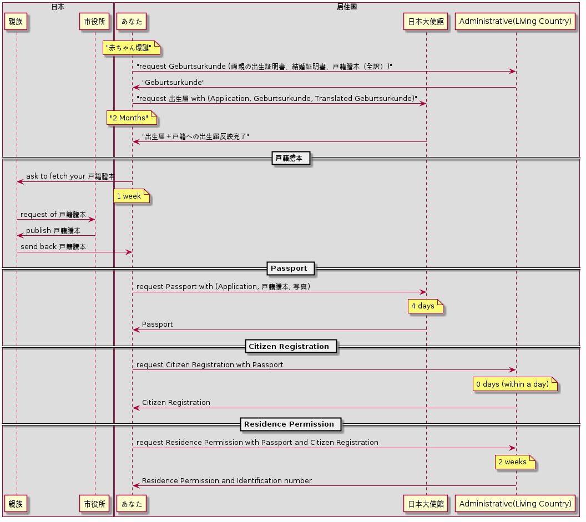
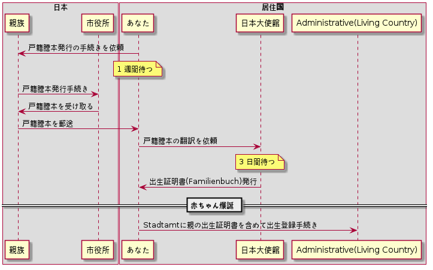
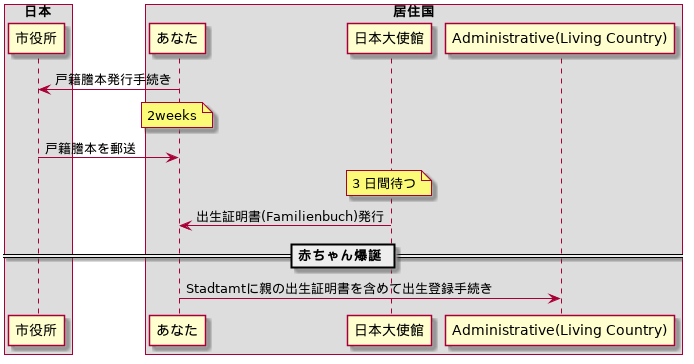

Camparijet
Table of Contents
出産前に済ませておきたいお家のセットアップと買い物リスト
出産は突然でしたが、あっという間に１ヶ月が無事に終わりました。 パートナーの尽力により、たこやき君も日々すくすく成長していて安心です。
忘れないうちに、もしも過去に遡って出産前に用意しておくなら用意しておいたであろうリストをおいておきます。
- ベッド(Bett)
- 本体
- マットレス(Matratze)
- シーツ(Jersey Spannbettlaken)
- 毛布(Decke)
- おむつ交換台
- 凹型マットレス(Keil Mulde)
- 交換用紙シート(Wickelunterlage)
- おむつ用ゴミ箱
- ウェットティッシュ
- 体温計(Fieberthermometer)
- 加湿器
- 紙おむつ
- 洋服
- 下着
- 上着
- ベビーバッグ
- おくるみ(Windeltücher)
- 幼児用洗濯洗剤
- ミルク関連
- 粉ミルク
- 哺乳瓶
- 注射器
- 幼児用食器洗剤
- 搾乳機
- 煮沸消毒用の鍋
- チャイルドシート + ベビーカー
- お風呂用品
- お風呂
- 温度計
- 泡立て用スポンジ
- かけ湯用鍋
ベッド (Bett)
たこやき君が日々の大半を過ごしている場所です。しかし思った以上にベッドの上では寝てくれないという。 日々工夫しているのですが、たこやき君の変化が著しいので未だ解決しておりません。
本体
扉がないベッドの方が赤ん坊を入れやすいかと思い、左のような扉なしのものを探していました。しかし、実際使ってみると親ベッドに座りながら赤ん坊を持ち運ぶ必要があり、想像以上に大変でした。 そして生後一ヶ月は別に親ベッドにくっつけなくても寝てくれるようです。 むしろ扉がないベッドから入れるのがでこちらのほうが便利で良かったかなーと後悔しています。そんなわけでふたつ目を貼っておきます。
マットレス
マットレスは特にこだわりなくサイズだけ気をつけて購入。おもらしをしてしまうこともあるとおもうので、２つ買っておくといいのかなと思います。
シーツ
こちらも色とサイズだけ気をつけて購入。Water-proof/Wasserdichteとかあるらしい。
毛布
冬生まれだと毛布は必須になるかと。このサイズだとおくるんだ上からもかけられるので便利でした。
おむつ交換台
生後一ヶ月、おとうさんが手軽に貢献できるのはおむつ交換ではないでしょうか。
ベルリンの病院あるあるだと思いますが、私達の出産がおこなわれた病院では、出産直後から、Hebameさんや看護師さんがおむつ交換をお父さんに頼んできます。
お父さん方は出産直後の３日間くらいはそこで修行し、お家へ帰ります。
交換台をきちんとセットアップしておくと、出産後病院から戻ってきたときとても楽だと思います。
マットレス
個人的に、おむつ交換時に赤ん坊が痛くないように机などに凹型のマットレスを引くことをおすすめします。
私達の場合、パートナーがしっかりと布を机に引いて用意してくれていたのですが、病院から帰ってきて相談の上即購入しました。
最初から買っておくべきだった、というものの１つです。
修行中に病院でもマットレスを使っていたのですが、これがとても便利でした。
安心して赤ん坊をおける場所が一つ増えるだけで作業がぐんとやりやすくなります。
交換用紙シート
https://www.rossmann.de/produkte/babydream/wickelunterlage/4305615544250.html https://www.dm.de/babylove-wickelunterlagen-p4058172059810.html
どんなに頑張ってもおむつ台で漏らすのでこういうの用意しておきます。
慣れるまでこういう些細なことで心が折れるので備えておくと楽です。
おむつ用ゴミ箱
冬でも匂いが部屋にこもらなくて快適。
ウェットティッシュ
排泄後の処理に必須なのでこのくらい買っておいたほうが安心だと思います。消費速度は1箱/月。
体温計
１０秒程度と手早くできること。素材が柔らかく、あかちゃんに負担が少ない。いずれの点でも大人用ものを使うより格段に良いと思います。
加湿器
紙おむつ
洋服
下着
上着
ベビーバッグ
おくるみ
巻いてよし、だっこ時の服ならしによし、寝るときにかけてよしと出産直後から大活躍したおくるみ。 早めに購入して確実に出産入院バックに入れておきたいところ。
幼児用洗濯洗剤
ミルク関連
粉ミルク
哺乳瓶
注射器
幼児用食器洗剤
搾乳機
煮沸消毒用の鍋
チャイルドシート + ベビーカー
お風呂用品
お風呂
温度計
どの温度にするべきかも書いてあって便利。温度間違えると大怪我につながるので必須です。
泡立て用スポンジ
かけ湯用鍋
出産から１ヶ月後までで大変だったことまとめ
- 母乳が出ないよ問題
- 粉ミルク
- 搾乳器の
ドイツで日本人同士の両親から子供が生まれた場合の手引
- Before birth
- 子供のGeburtsurkunde用の書類準備
- 両親のGeburtsurkunde
- 両親のVerheiratekunde / Lebenspartnerschaftsurkunde
- 戸籍謄本の全訳
- 物品の購入
- おむつ台などのセットアップ
- 子供のGeburtsurkunde用の書類準備
- After birth
- Geburtsurkunde
- Reisepass/Passport
- Kindergeld
- Elterngeld
- KITA Guteschein
Geburtsurkunde用の戸籍謄本（全訳） ドイツで日本人同士の両親から子供が生まれた場合の諸手続き
Geburtsurkundeの取得には下記を提出する必要があります。
- 両親のGeburtsurkunde
- 両親のVerheiratekunde
- 上記の原本及びそのドイツ語訳
たまたま今回BerlinのStandesamt（出生局）の人が国別マニュアルを見せてくれまして。 それによると、日本人の場合、資料上記３つめの「原本」は「両親世帯のアポスティーユ付きの戸籍謄本」でした。
また、GeburtsurkundeとVerheiratekundeは在ドイツ日本大使館に戸籍謄本を持参すると作ってもらえます。これら２つの書類発行は日本国で閉じた手続きのため、アポスティーユの有無は関係ありません。
まとめると、タスクは下記の通り。
- アポスティーユ付きの戸籍謄本取得（だいたい１ヶ月）
- 大使館にて戸籍謄本からドイツ語全訳、Geburtsurkunde, Verheiratekundeを作成（１週間）
戸籍謄本は本籍のある自治体から取得。さらにそのあと外務省で認証を経てアポスティーユをつけてもらいます。
大都市であればワンストップサービスがおすすめです。
https://www.mofa.go.jp/mofaj/toko/page22_000607.html
Standesamtではアポスティーユの認証期間（３ヶ月）に関して厳しく見ている様子はありませんでした。
こちらで日本人同士で結婚した場合、必ずアポスティーユ付きの戸籍謄本が取得しているので、捨てずに使えということなんでしょうかね。
出産後にすぐにこれらの書類を提出できると後が楽なので、予定日の３ヶ月前から動き出しておくことを強くおすすめします。
子供のパスポートの取得手続 ドイツで日本人同士の両親から子供が生まれた場合の諸手続き
とりあえず戸籍反映までに２ヶ月かかると見ておいた方がよさそうです。

大使館の記事によるとGeburtsurkundeの翻訳が必要だそうですが、これは法定翻訳なんだろうか？
<2019-01-12 Sat>: 追記： 日本大使館領事部の方が教えてくれました。法定翻訳ではなく、自分で翻訳して構わないそうです。
戸籍謄本を取得して両親のGeburtsurkundeを作る手続き baby
日本の親族に手伝ってもらえる場合

自分でやる場合
